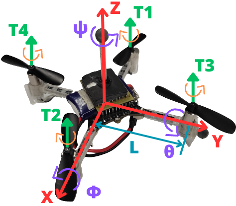
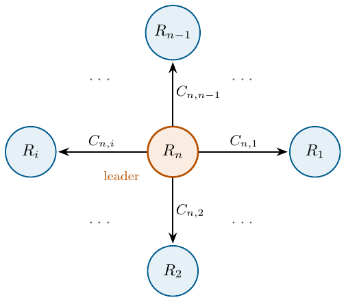
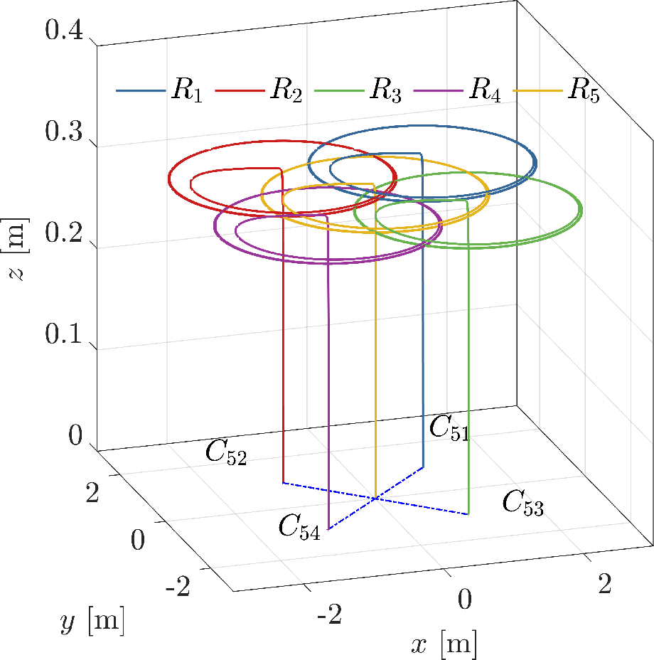
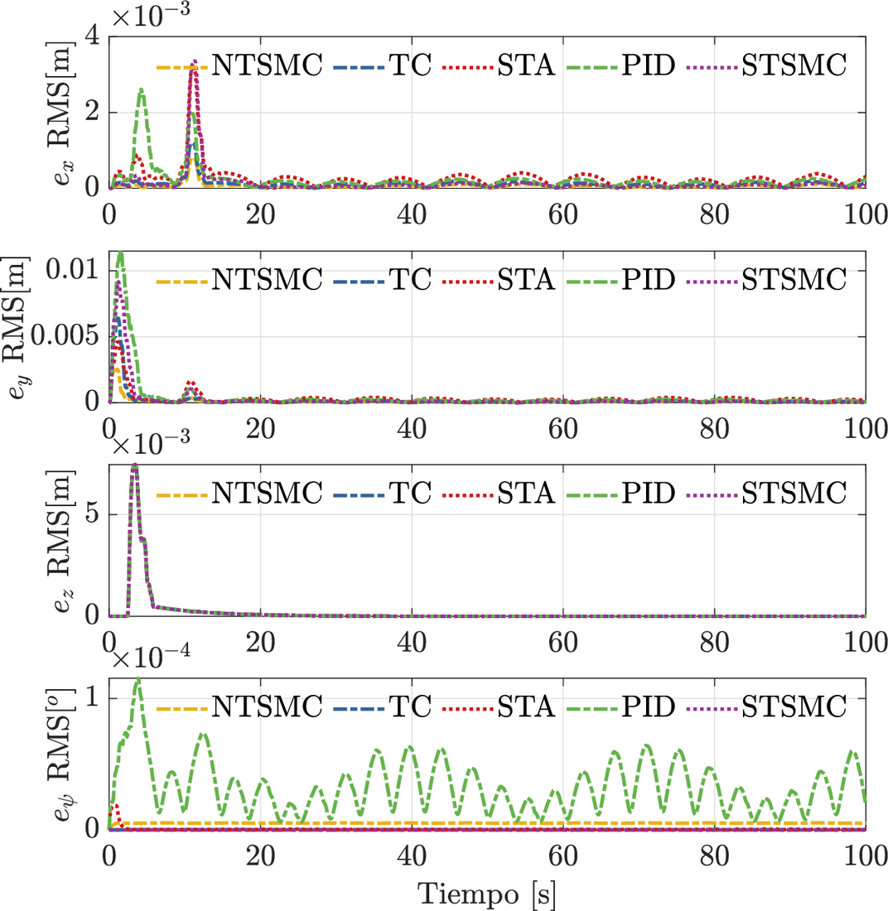
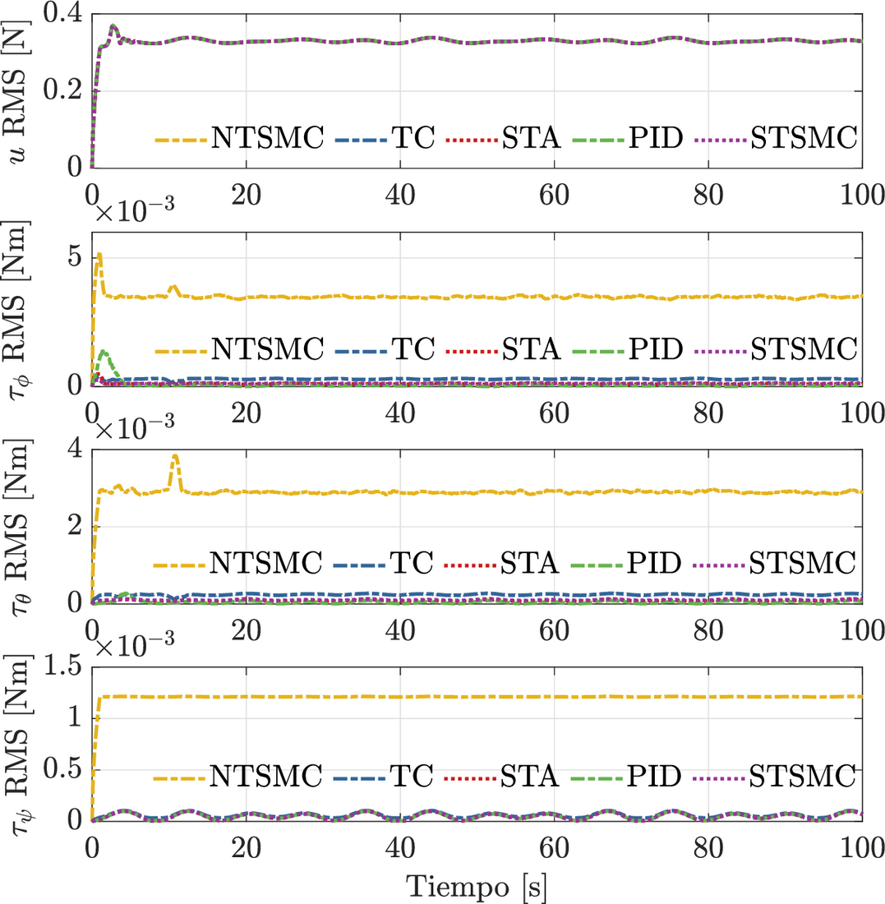

1 Introduction
Over the last two decades, research on cooperative control of multi-agent systems has attracted great interest. The reason is the many potential applications in civil and military areas [1]. Examples include creating geometric figures in a controlled environment [2], cooperative transport (see e.g., [3] and [4]), mapping, and localization [5].
The goal of cooperative multi-agent control is to design a control law that accounts for the robot dynamics and the interaction topology among them, in order to reach the group objectives. Several robots working together on a task can provide robustness to failures and reduce the cost of highly complex tasks, among other benefits.
The literature offers several cooperative control strategies for quadrotors. Formation control is a fundamental problem in the cooperative control of multi-agent systems. In formation control, the goal is for all robots to reach and keep a predefined geometric configuration. In [2], a swarm of nano quadrotors flies in formation indoors, and a method is proposed to track multiple quadrotors with identifiers. In [4], a fixed-time stable formation control is considered for a team of quadrotors that cooperatively transport a suspended load under a leader-follower scheme. This control scheme includes an observer that compensates the disturbances affecting the position dynamics.
In [6], the challenge of developing complex systems that operate in uncertain environments is addressed. That work gives an overview of state-of-the-art solutions in emergent systems, self-organization, self-adaptation, and robotics. In [7], a geometric controller is proposed for load transfer using quadrotors. In [8], a robust controller is designed for a set of quadrotors forming a geometric pattern. The proposed control strategy is based on sliding mode techniques. It robustly regulates the positions and corresponding angles of the quadrotors under a class of disturbances.
In [9], a trajectory tracking control scheme for quadrotors is presented. The method combines model predictive control and cooperative particle swarm optimization. Two distinct swarms tune the position and orientation parameters. They work collaboratively to improve trajectory tracking performance.
Robust controller design is a topic of interest for quadrotor formation tasks. In [10], a formation control for a time-varying geometric pattern is presented. The authors use a cascade (attitude-position) control strategy based on sliding modes. The controller design uses a linearization of the virtual controllers, which generate the reference signals for roll, pitch, and total thrust. On the other hand, [11] presents trajectory tracking for a quadrotor, also with a cascade sliding mode control strategy. In this case, the controller design does not linearize the virtual controllers. This means that the result in [10] is local, i.e., valid for small angles, while [11] has no such restriction.
Motivated by these works, this paper extends the idea of [11] to design robust controllers for quadrotor formation tasks. It uses PID controllers and continuous sliding mode controllers (Super-Twisting [12], Twisting [13], singular terminal [14] and non-singular terminal [15]). The virtual controllers are not linearized. A comparative study of the different controllers is also carried out with a performance index.
The paper is organized as follows. Section II states the problem. The preliminary concepts are described in Section III. The formation control design is described in Section IV. The simulation results are shown in Section V. Finally, the conclusions are presented in Section VI.
Notation: The following notation is also used. \(\| \cdot \|\) denotes the Euclidean norm in \(\mathbb{R}^{n}\). For a Lebesgue measurable function \(w \in \mathbb{R}_{+} \rightarrow \mathbb{R}^{m}\), the norm is defined as \(\| w \|_{[t_{0},t_{1})} = ess \mathrm{sup}_{t \in [t_{0},t_{1})}\| w(t) \|\), and then \(\| w \|_{\infty} = \| w \|_{[0, + \infty )}\). The set of \(w(t)\) with the property \(\| w \|_{\infty} < + \infty\) is denoted by \(\mathcal{L}_{\infty}\), and \(\mathcal{L}_{D} = \{w \in \mathcal{L}_{\infty} : \| w \|_{\infty} \leq D\}\) for \(D>0\). The function \(\lceil a \rfloor ^{\gamma} := |a|^{\gamma} \mathrm{sign}(a)\) for any \(a \in \mathbb{R}\) and \(\gamma \in \mathbb{R}_{\geq 0}\).
2 Problem statement
Consider a system of \(n\) quadrotors, where the \(i\)-th one has the following simplified dynamics (see Figure 1, and [16] for modeling details):
\begin{align} \boldsymbol{\dot{\xi}}_{1i} &= \boldsymbol{\xi}_{2i} , \tag{1a}\\ \boldsymbol{\dot{\xi}}_{2i} &= \boldsymbol{g}_{\boldsymbol{\xi} i}(\boldsymbol{\eta}_{1i})u_{mi}-\boldsymbol{G}_{i} - \boldsymbol{\Lambda}_{\boldsymbol{\xi} i}\boldsymbol{\xi}_{2i} + \boldsymbol{d}_{\xi i}, \tag{1b}\\ \boldsymbol{\dot{\eta}}_{1i} &= \boldsymbol{\eta}_{2i}, \tag{1c}\\ \boldsymbol{\dot{\eta}}_{2i} &= \boldsymbol{J}_i\boldsymbol{\tau}_i + \boldsymbol{\Xi}_i \boldsymbol{w}_{\boldsymbol{\eta} i}(\boldsymbol{\eta}_{2i}) - \boldsymbol{\Lambda}_{\boldsymbol{\eta} i}\boldsymbol{\eta}_{2i} + \boldsymbol{d}_{\eta i}, \tag{1d} \end{align}
with \(i =1,2,...,n =\overline{1,n}\), where \(\boldsymbol{\xi}_{1i} := [x_i \quad y_i \quad z_i]^{\top}~ \in \mathbb{R}^3\), \(\boldsymbol{\xi}_{2i} := [\dot{x_{i}} \quad \dot{y_{i}} \quad \dot{z_{i}}]^{\top}~ \in \mathbb{R}^3\), \(\boldsymbol{\eta}_{1i} := [\phi_{i} \quad \theta_{i} \quad \psi_{i}]^{\top}~ \in \mathbb{R}^3\), \(\boldsymbol{\eta}_{2i} := [\dot{\phi_{i}} \quad \dot{\theta_{i}},~\dot{\psi_{i}}]^{\top}~ \in \mathbb{R}^3\), \(\boldsymbol{d}_{\xi_{i}} := [d_{x_{i}} \quad d_{y_{i}} \quad d_{z_{i}}]^{\top}~ \in \mathbb{R}^3\) and \(\boldsymbol{d}_{\eta_i} := [d_{\phi_i} \quad d_{\theta_i} \quad d_{\psi_i}]^{\top}~ \in \mathbb{R}^3\). The terms \(x_{i}, y_{i} \in \mathbb{R}\) denote the coordinates in the horizontal plane, and \(z_{i} \in \mathbb{R}\) describes the vertical position. The terms \(\phi_{i}, \theta_{i}\) and \(\psi_{i} \in \mathbb{R}\) represent the tilt angles about the \(X\) axis (roll), the \(Y\) axis (pitch), and the \(Z\) axis (yaw), respectively. In addition, \(\boldsymbol{G}_{i} := [0 \quad 0 \quad g]^{\top} \in \mathbb{R}^3\), \(\boldsymbol{J}_{i} := \operatorname{diag}(J_{xi}^{-1},~ J_{yi}^{-1},~J_{zi}^{-1}) \in \mathbb{R}^{3\times 3}\) and \(\boldsymbol{\tau}_i := [\tau_{\phi_{i}} \quad \tau_{\theta_{i}} \quad \tau_{\psi_{i}}]^{\top} \in \mathbb{R}^3\) correspond to the gravity vector, the inertia matrix, and the torque vector. Here \(g\) is the gravitational acceleration, \(J_{x_{i}}\), \(J_{y_{i}}\) and \(J_{z_{i}}\) are the moments of inertia about the \(X\), \(Y\) and \(Z\) axes, and \(\tau_{\phi_{i}}\), \(\tau_{\theta_{i}}\) and \(\tau_{\psi_{i}} \in \mathbb{R}\) are the roll, pitch and yaw torques, respectively. The term \(u_{m_{i}} := {u_{i}}/{m_{i}}\), where \(u_i \in \mathbb{R}\) is the thrust along \(Z\) and \(m_i \in \mathbb{R}^+\) is the mass of each quadrotor. The matrices \(\boldsymbol{\Lambda}_{\xi i} := \operatorname{diag}{(a_{x i},a_{y i},a_{z i})} \in \mathbb{R}^{3\times 3}\), \(\boldsymbol{\Lambda}_{\eta i} := \operatorname{diag}{(a_{\phi i},a_{\theta i},a_{\psi i})} \in \mathbb{R}^{3\times 3}\) and \(\boldsymbol{\Xi} i := \operatorname{diag}{(b_{\phi i}, b_{\theta i}, b_{\psi i})} \in \mathbb{R}^{3\times 3}\) are given by the aerodynamic damping coefficients \(a_{x i}\), \(a_{y i}\) and \(a_{z i}\), the rotational drag coefficients \(a_{\phi i}\), \(a_{\theta i}\) and \(a_{\psi i}\), and the inertia coefficients \(b_{\phi i} := ({J_{y i} - J_{z i}})/{J_{x i}}\), \(b_{\theta i} := ({J_{z i} - J_{x i}})/{J_{y i}}\) and \(b_{\psi i} := ({J_{x i} - J_{y i}})/{J_{z i}}\). The functions \(\boldsymbol{g}_{\boldsymbol{\boldsymbol{\xi}} i} : \mathbb{R}^3 \rightarrow \mathbb{R}^3\) and \(\boldsymbol{w}_{\boldsymbol{\eta} i} : \mathbb{R}^3 \rightarrow \mathbb{R}^3\) are defined as follows: \(\boldsymbol{g}_{\boldsymbol{\xi i}}(\boldsymbol{\eta}_1 i) := [\cos\phi_{i} \sin\theta_{i} \cos\psi_{i} + \sin\phi_{i} \sin\psi_{i} \quad \cos\phi_{i} \sin\theta_{i} \sin\psi_{i} - \sin\phi_{i} \cos\psi_{i} \quad \cos\phi_{i} \cos\theta_{i} ]^{\top}\) and \(\boldsymbol{w}_{\boldsymbol{\eta} i}(\boldsymbol{\eta}_{2 i}):=[\dot{\theta}_{i}\dot{\psi}_{i} \quad \dot{\phi}_{i}\dot{\psi}_{i} \quad \dot{\phi}_{i}\dot{\theta}_{i} ]^{\top}\). The terms \(d_{x}\), \(d_{y}\), \(d_{z}\), \(d_{\phi_i}\), \(d_{\theta_i}\) and \(d_{\psi_i} ~ \in \mathbb{R}\) represent the disturbances due to uncertainties and external perturbations, e.g., unmodeled dynamics and wind gusts.
The disturbances are uniformly bounded and Lipschitz continuous, i.e., \(d_{x i} \in \mathcal{L}_{D_{x i}}\), \(d_{y i} \in \mathcal{L}_{D_{y i}}\), \(d_{z i} \in \mathcal{L}_{D_{z i}}\), \(\dot{d}_{x i} \in \mathcal{L}_{\bar{D}_{x i}}\), \(\dot{d}_{y i} \in \mathcal{L}_{\bar{D}_{y i}}\), \(\dot{d}_{z i} \in \mathcal{L}_{\bar{D}_{z i}}\), \(d_{\phi i} \in \mathcal{L}_{D_{\phi i}}\), \(d_{\theta i} \in \mathcal{L}_{D_{\theta i}}\), \(d_{\psi i} \in \mathcal{L}_{D_{\psi i}}\), \(\dot{d}_{\phi i} \in \mathcal{L}_{\bar{D}_{\phi i}}\), \(\dot{d}_{\theta i} \in \mathcal{L}_{\bar{D}_{\theta i}}\), \(\dot{d}_{\psi i} \in \mathcal{L}_{\bar{D}_{\psi i}}\), with positive constants \(D_{x i}\), \(D_{y i}\), \(D_{z i}\), \(D_{\phi i}\), \(D_{\theta i}\), \(D_{\psi i}\), \(\bar{D}_{x i}\), \(\bar{D}_{y i}\), \(\bar{D}_{z i}\), \(\bar{D}_{\phi i}\), \(\bar{D}_{\theta i}\), \(\bar{D}_{\psi i}\).
Note that disturbances such as wind gusts can be modeled as sinusoidal signals with various frequencies. This makes them bounded and, therefore, Lipschitz continuous.
This paper designs controllers that combine Continuous Sliding Mode Control (SMC) and PID controllers. They solve the formation problem for a group of quadrotors with a leader-centered multi-agent scheme. In addition, a comparative analysis of the different controllers is carried out with simulation results, in order to identify the control scheme with the best performance.

3 Preliminaries
Consider the following time-varying differential equation, represented as [17]: \[\frac{{dx(t)}}{{dt}} = f(t, x(t)), \quad t \geq t_0, \quad t_0 \in \mathbb{R}, \tag{2}\] where \(x(t) \in \mathbb{R}^n\) is the state, \(f: \mathbb{R}_{\geq 0} \times \mathbb{R}^n \rightarrow \mathbb{R}^n\) is continuous with respect to \(x\) and measurable with respect to \(t\), and \(f(t, 0) = 0\). The solution of (2) for an initial condition \(x_0 \in \mathbb{R}^n\) at time \(t_0 \in \mathbb{R}\) is denoted by \(x(t, t_0, x_0)\), and it is defined on some time interval \([t_0, t_0 + T)\), where \(0 \leq T < \infty\). Let \(\Omega\) be an open subset of \(\mathbb{R}^n\) such that \(0 \in \Omega\).
[1]. A formation graph \(\mathcal{G}={\{N,E,C\}}\) consists of a set of nodes \(N = \{R_1, \ldots, R_n\}\), which correspond to each agent; a set of edges \(E = \{(R_j R_i) \in N \times N , i \neq j\}\), which indicates that agent \(R_i\) receives information from agent \(R_j\); and a set of labels \(C = \{C_{j i} \in \mathbb{R}^3 ,|, (R_j R_i) \in N \times N, i \neq j\}\), which represents a desired relative position vector of agent \(R_i\) with respect to agent \(R_j\). In addition, let \(N_i \subset N\) be the set of detectable positions of agent \(R_i\).
The following statements are introduced:
Agent \(R_{n}\) is the leader agent, and the other agents are followers.
If \(N_{n} = \emptyset\), the leader agent receives no information from any other agent.
The desired formation vectors \(C_{j i}\) are time-invariant, that is, \(C_{j i} = [c_{j i x} \quad c_{j i y} \quad c_{j i z}]^\top\).
The desired trajectory for the leader agent \(R_{n}\) is defined as \(\boldsymbol{\xi}_{d} = [x_{d} \quad y_{d} \quad z_{d}]^T\) and \(\boldsymbol{\eta}_d = [\phi_{\star_n} \quad \theta_{\star_n} \quad \psi_d]\), where \(x_d\), \(y_d\), \(z_d\) and \(\psi_d \in \mathcal{C}^\infty\) are some desired trajectories to follow, while \(\phi_{\star_n}\) and \(\theta_{\star_n}\) are reference signals generated with virtual controls (they will be designed later). The desired trajectory is continuous and bounded.
The leader is the only agent that knows the desired trajectory.
In the graph under study, the leader has a directed spanning tree, that is, there are directed paths from the leader to all the other agents.
Assumption 3 indicates that no agent is left isolated. This ensures that the agents converge to the desired formation using the minimum amount of information that the agents need to know.
4 Control strategy
This section presents a control strategy based on three PID controllers and three continuous sliding mode controllers with different control laws (PID, TC, STA, STSMC, NTSMC), together with six finite-time sliding mode observers [11]. The proposed formation control design addresses a group of \(n\) quadrotors, and it considers the formation graph shown in Figure 2.

4.1 Finite-time sliding mode observer (FT-SMO)
Consider system (1) and the following observer (based on [11]):
\begin{align} \boldsymbol{\dot{\hat{\xi}}}_{1 i} &= \boldsymbol{\hat{\boldsymbol{\xi}}}_{2 i} + \hat{\boldsymbol{K}}_{1 i} \boldsymbol{\varphi}_{1 i}(\hat{\boldsymbol{e}}_{\boldsymbol{\xi} i}) , \tag{3a}\\ \boldsymbol{\dot{\hat{\xi}}}_{2 i} &= \boldsymbol{g}_{\boldsymbol{\xi} i}(\boldsymbol{\eta}_{1 i})u_{m i} - \boldsymbol{G}_{i} - \boldsymbol{\Lambda}_{\boldsymbol{\xi} i} \boldsymbol{\xi}_{2 i} + \boldsymbol{\hat{\xi}}_{3 i} + \boldsymbol{\hat{\boldsymbol{K}}}_{2 i} \boldsymbol{\varphi}_{2 i}(\boldsymbol{\hat{\boldsymbol{e}}}_{\boldsymbol{\xi} i}),\\ \boldsymbol{\dot{\hat{\xi}}}_{3 i} &= \hat{\boldsymbol{K}}_{3 i} \boldsymbol{\varphi}_{3 i}(\hat{\boldsymbol{e}}_{\boldsymbol{\xi}i}) , \tag{3b}\\ \boldsymbol{\dot{\hat{\eta}}}_{1 i} &=\boldsymbol{\hat{\eta}}_{2 i} + \hat{\boldsymbol{K}}_{4 i} \boldsymbol{\varphi}_{1 i}(\hat{\boldsymbol{e}}_{\boldsymbol{\eta} i}) , \tag{3c}\\ \boldsymbol{\dot{\hat{\eta}}}_{2 i} &= \boldsymbol{J}_i\boldsymbol{\tau}_i+\boldsymbol{\Xi}_i \boldsymbol{w}_{i}(\boldsymbol{\eta}_{2i}) - \boldsymbol{\Lambda}_{\boldsymbol{\eta} i}\boldsymbol{\eta}_{2i} + \boldsymbol{\hat{\eta}}_{3i} +\boldsymbol{\hat{\boldsymbol{K}}}_{5 i} \boldsymbol{\varphi}_{2 i}(\boldsymbol{\hat{\boldsymbol{e}}}_{\boldsymbol{\eta}i}) , \tag{3d}\\ \boldsymbol{\dot{\hat{\eta}}}_{3 i} &= \hat{\boldsymbol{K}}_{6 i} \boldsymbol{\varphi}_{3 i}(\hat{\boldsymbol{e}}_{\boldsymbol{\eta} i}) , \tag{3e} \end{align}
where \(\hat{\boldsymbol{e}}_{\boldsymbol{\xi} i}:=\boldsymbol{\xi}_{1i}-\boldsymbol{\hat{\xi}}_{1i} \in \mathbb{R}^3\) and \(\hat{\boldsymbol{e}}_{\boldsymbol{\eta} i}:=\boldsymbol{\eta}_{1i}-\boldsymbol{\hat{\eta}}_{1i} \in \mathbb{R}^3\) are the output errors. The nonlinear output injections \(\boldsymbol{\varphi}_{1 i}\), \(\boldsymbol{\varphi}_{2 i}\), \(\boldsymbol{\varphi}_{3 i} : \mathbb{R}^3 \rightarrow \mathbb{R}^3\) are given by \[\boldsymbol{\varphi}_{1 i}(\boldsymbol{s}) := \lceil \boldsymbol{s} \rfloor ^{\frac{2}{3}}, \quad \boldsymbol{\varphi}_{2}(\boldsymbol{s}) := \lceil \boldsymbol{s} \rfloor ^{\frac{1}{3}}, \quad \boldsymbol{\varphi}_{3}(\boldsymbol{s}) := \lceil \boldsymbol{s} \rfloor ^{0}\] with \(\lceil \boldsymbol{s} \rfloor ^{\gamma}:=[ \lceil s_{1} \rfloor ^{\gamma} \quad \lceil s_{2} \rfloor ^{\gamma} \quad \lceil s_{3} \rfloor ^{\gamma} ]^\top\), and a diagonal gain matrix \(\boldsymbol{\hat{K}}_{ji}= \operatorname{diag}{(k_{j1i},k_{j2i},k_{j3i})}\) with \(j =\overline{1,6}\). The estimation state error is defined as \(\hat{\boldsymbol{e}}:= [\hat{\boldsymbol{e}}_{\boldsymbol{\xi} i}^\top \quad \hat{\boldsymbol{\varepsilon}}_{\boldsymbol{\xi} i}^\top \quad \hat{\boldsymbol{e}}_{\boldsymbol{\eta} i}^\top \quad \hat{\boldsymbol{\varepsilon}}_{\boldsymbol{\eta} i}^\top]^T\), where \(\hat{\boldsymbol{\varepsilon}}_{\boldsymbol{\xi} i} := \boldsymbol{\xi}_{2i} -\boldsymbol{\hat{\xi}}_{2i}\) and \(\hat{\boldsymbol{\varepsilon}}_{\boldsymbol{\eta} i} := \boldsymbol{\eta}_{2i} -\boldsymbol{\hat{\eta}}_{2i}\) are the linear and angular velocity errors, respectively.
Based on [11], if observer (3) is applied to system (1), and the gains are selected as: \[\begin{array}{ccc} \hat{k}_{11i} = 2\bar{D}_{x}^{\frac{1}{3}}, & \hat{k}_{12i} = 1.5\bar{D}_{x}^{\frac{1}{2}}, & \hat{k}_{13i} = 1.1\bar{D}_{x},\\ \hat{k}_{21i} = 2\bar{D}_{y}^{\frac{1}{3}}, & \hat{k}_{22i} = 1.5\bar{D}_{y}^{\frac{1}{2}}, & \hat{k}_{23i} = 1.1\bar{D}_{y},\\ \hat{k}_{31i} = 2\bar{D}_{z}^{\frac{1}{3}}, & \hat{k}_{32i} = 1.5\bar{D}_{z}^{\frac{1}{2}}, & \hat{k}_{33i} = 1.1\bar{D}_{z},\\ \hat{k}_{41i} = 2\bar{D}_{\phi}^{\frac{1}{3}}, & \hat{k}_{42i} = 1.5\bar{D}_{\phi}^{\frac{1}{2}}, & \hat{k}_{43i} = 1.1\bar{D}_{\phi},\\ \hat{k}_{51i} = 2\bar{D}_{\theta}^{\frac{1}{3}}, & \hat{k}_{52i} = 1.5\bar{D}_{\theta}^{\frac{1}{2}}, & \hat{k}_{53i} = 1.1\bar{D}_{\theta},\\ \hat{k}_{61i} = 2\bar{D}_{\psi}^{\frac{1}{3}}, & \hat{k}_{62i} = 1.5\bar{D}_{\psi}^{\frac{1}{2}}, & \hat{k}_{63i} = 1.1\bar{D}_{\psi}, \end{array}\]
then \(\hat{\boldsymbol{e}}=0\) is Uniformly Finite-Time Stable (UFTS).
4.2 Disturbance identification
Define \(\hat{\boldsymbol{\epsilon}}_{\boldsymbol{\xi} i} := \boldsymbol{d}_{\xi i}(t) - \hat{\boldsymbol{\xi}}_{3 i}\) and \(\hat{\boldsymbol{\epsilon}}_{\boldsymbol{\eta} i} := \boldsymbol{d}_{\eta i}(t) - \hat{\boldsymbol{\eta}}_{3 i}\). The corresponding error dynamics can then be written as \[\begin{array}{cc} \dot{\hat{\boldsymbol{e}}}_{\boldsymbol{\xi} i} = \hat{\boldsymbol{\varepsilon}}_{\boldsymbol{\xi} i} - \boldsymbol{\hat{K}}_{1 i} \boldsymbol{\varphi}_{1 i} (\boldsymbol{\hat{e}}_{\boldsymbol{\xi} i}) , & \dot{\hat{\boldsymbol{e}}}_{\boldsymbol{\eta} i} = \boldsymbol{\hat{\varepsilon}}_{\boldsymbol{\eta} i} - \boldsymbol{\hat{K}}_{4 i} \boldsymbol{\varphi}_{1 i} (\boldsymbol{\hat{e}}_{\boldsymbol{\eta} i}) , \\ \dot{\hat{\boldsymbol{\varepsilon}}}_{\boldsymbol{\xi} i} = \boldsymbol{\hat{\epsilon}}_{\boldsymbol{\xi} i} - \boldsymbol{\hat{K}}_{2i} \boldsymbol{\varphi}_{2 i} (\boldsymbol{\hat{e}}_{\boldsymbol{\xi} i}) , & \dot{\hat{\boldsymbol{\varepsilon}}}_{\boldsymbol{\eta} i} = \boldsymbol{\hat{\epsilon}}_{\boldsymbol{\eta} i} - \boldsymbol{\hat{K}}_{5i} \boldsymbol{\varphi}_{2 i} (\boldsymbol{\hat{e}}_{\boldsymbol{\eta} i}) , \\ \dot{\hat{\boldsymbol{\epsilon}}}_{\boldsymbol{\xi} i} = \boldsymbol{\dot{d}}_{\xi i} - \boldsymbol{\hat{K}}_{3i} \boldsymbol{\varphi}_{3 i} (\boldsymbol{\hat{e}}_{\boldsymbol{\xi} i}) , & \dot{\hat{\boldsymbol{\epsilon}}}_{\boldsymbol{\eta} i} = \boldsymbol{\dot{d}}_{\eta i} - \boldsymbol{\hat{K}}_{6i} \boldsymbol{\varphi}_{3 i} (\boldsymbol{\hat{e}}_{\boldsymbol{\eta} i}). \end{array}\]
This error dynamics is UFTS. It implies that \(\hat{\boldsymbol{\xi}}_{1 i} = \boldsymbol{\xi}_{1 i}\), \(\hat{\boldsymbol{\xi}}_{2 i} = \boldsymbol{\xi}_{2 i}\), \(\hat{\boldsymbol{\xi}}_{3 i} = \boldsymbol{d}_{\xi}\), \(\hat{\boldsymbol{\eta}}_{1 i} = \boldsymbol{\eta}_{1 i}\), \(\hat{\boldsymbol{\eta}}_{2 i} = \boldsymbol{\eta}_{2 i}\), \(\hat{\boldsymbol{\eta}}_{3 i} = \boldsymbol{d}_{\eta}\), for all \(t\geq T_0 >0\). If Assumption 1 holds, then the FT-SMO given by (3) provides the following disturbance identifications for all \(t \geq T_0\)
\begin{align} \hat{\boldsymbol{\xi}}_{3i} &= [\hat{\xi}_{x3i} \quad \hat{\xi}_{y3i} \quad \hat{\xi}_{z3i}]^\top = [d_{x}(t) \quad d_{y}(t) \quad d_{z}(t)]^\top , \tag{4a}\\ \hat{\boldsymbol{\eta}}_{3i} &= [\hat{\eta}_{x3i} \quad \hat{\eta}_{y3i} \quad \hat{\eta}_{z3i}]^\top= [d_{\phi}(t) \quad d_{\theta}(t) \quad d_{\psi}(t)]^\top. \tag{4b} \end{align}
These identification terms can strengthen any kind of continuous controller strategy.
4.3 Control design
Based on Definitions 2 and 3, and the leader-centered formation graph, the formation errors for agents \(j=\overline{1,n-1}\) are given as follows \[\begin{gathered} \boldsymbol{e}_{\boldsymbol{\xi} j} = \boldsymbol{\xi}_{1 j} - \boldsymbol{\xi}_{1 n} - C_{n,j}, \quad \boldsymbol{\varepsilon}_{\boldsymbol{\xi} j} = \hat{\boldsymbol{\xi}}_{2 j} - \boldsymbol{\xi}_{2 n}, \\ \boldsymbol{e}_{\boldsymbol{\eta} j} = \boldsymbol{\eta}_{1 j} - \boldsymbol{\eta}_{d j}, \quad \boldsymbol{\varepsilon}_{\boldsymbol{\eta} j} = \hat{\boldsymbol{\eta}}_{2 j} - \dot{\boldsymbol{\eta}}_{d j}, \end{gathered}\] where \(C_{n,j}\in\mathbb{R}^{3}\) is the formation vector with respect to the leader and \(\boldsymbol{\eta}_{d j}=[\phi_{\star j} \quad \theta_{\star j} \quad \psi_{n}]^{\top}\in\mathbb{R}^{3}\), with \(\phi_{\star j}\) and \(\theta_{\star j}\) as reference signals designed later.
On the other hand, the tracking error of the leader agent \(n\) is given as \[\begin{gathered} \boldsymbol{e}_{\boldsymbol{\xi} n} = \boldsymbol{\xi}_{1 n} - \boldsymbol{\xi}_{d}, \quad \boldsymbol{\varepsilon}_{\boldsymbol{\xi} n} = \hat{\boldsymbol{\xi}}_{2 n} - \dot{\boldsymbol{\xi}}_{d},\\ \boldsymbol{e}_{\boldsymbol{\eta} n} = \boldsymbol{\eta}_{1 n} - \boldsymbol{\eta}_{d}, \quad \boldsymbol{\varepsilon}_{\boldsymbol{\eta} n} = \hat{\boldsymbol{\eta}}_{2 n} - \dot{\boldsymbol{\eta}}_{d}, \end{gathered}\] where \(\boldsymbol{\eta}_{d}=[\phi_{\star n} \quad \theta_{\star n} \quad \psi_{d}]^{\top}\in\mathbb{R}^{3}\), with the references \(\phi_{\star n}\) and \(\theta_{\star n}\) also designed later.
Quadrotors are underactuated (four inputs for 6 degrees of freedom). Two degrees of freedom cannot be “controlled” independently. These usually correspond to pitch and roll, which are designed as reference signals, denoted \(\phi_{\star_i}\), \(\theta_{\star_i}\).
A virtual controller \(\nu_i := [\nu_{xi} \quad \nu_{yi} \quad \nu_{zi}]^T\) is thus introduced into the position error dynamics, and the formation error dynamics take the following form:
\begin{align} \dot{\boldsymbol{e}}_{\boldsymbol{\xi} i} &= \boldsymbol{\varepsilon}_{\boldsymbol{\xi} i}, \tag{5a}\\ \dot{\boldsymbol{\varepsilon}}_{\boldsymbol{\xi} i} &= \nu_{i} + \boldsymbol{w}_{\boldsymbol{\xi} i}(\boldsymbol{\eta}_{1 i}, u_{mi}, \nu_i) - \boldsymbol{\Lambda}_{\boldsymbol{\xi} i}\boldsymbol{\xi}_{2 i} + \boldsymbol{d}_{\xi i} - \ddot{\boldsymbol{\xi}}_{d i} , \tag{5b}\\ \dot{\boldsymbol{e}}_{\boldsymbol{\eta} i} &= \boldsymbol{\varepsilon}_{\boldsymbol{\eta} i}, \tag{5c}\\ \dot{\boldsymbol{\varepsilon}}_{\boldsymbol{\eta} i} &= \boldsymbol{J}_{i}\boldsymbol{\tau}_{i} + \boldsymbol{\Xi}_{i} \boldsymbol{w}_{\boldsymbol{\eta} i}(\boldsymbol{\eta}_{2 i}) - \boldsymbol{\Lambda}_{\boldsymbol{\eta} i} \boldsymbol{\eta_{2 i}} + \boldsymbol{d}_{\eta i} - \ddot{\boldsymbol{\eta}}_{d i}, \tag{5d} \end{align}
where \(\boldsymbol{\omega}_{\boldsymbol{\xi} i}(\boldsymbol{\eta}_{1 i},u_{m i},\nu_{i}) = \boldsymbol{g}_{\boldsymbol{\xi} i}(\boldsymbol{\eta}_{1 i})u_{m i} - \boldsymbol{G}_{i} - \nu_{i}\). The virtual control \(\nu_i\) can then be selected as:
\begin{align} \nu_{x i} &= u_{m i} (\cos{\phi_{\star i}}\sin{\theta_{\star i}}\cos{\psi_{di}} + \sin{\phi_{\star i}}\sin{\psi_{di}}), \tag{6a}\\ \nu_{y i} &= u_{m i} (\cos{\phi_{\star i}}\sin{\theta_{\star i}}\sin{\psi_{di}} - \sin{\phi_{\star i}}\cos{\psi_{di}}), \tag{6b}\\ \nu_{z i} &= u_{m i} (\cos{\phi_{\star i}}\cos{\theta_{\star i}}) - g, \tag{6c} \end{align}
where \(i = \overline{1,n}\), \(\psi_{di} = \psi_{n}\), except for \(i=n\), where \(\psi_{n} = \psi_{d}\). The reference signals for each agent in (6) are given by:
\begin{align} u_i&=m_i \sqrt{\nu_{x i}^2 + \nu_{y i}^2 +(\nu_{z i}+g)^2}, \tag{7a}\\ \phi_{\star i} &= \arcsin{(u_{m_i}^{-1}(\nu_{x i}\sin{\psi_{di}}-\nu_{y i}\cos{\psi_{di}}))}, \tag{7b}\\ \theta_{\star i} &= \arctan{((\nu_{z i}+g)^{-1}(\nu_{x i}\cos{\psi_{di}}+\nu_{y i}\sin{\psi_{di}}))}. \tag{7c} \end{align}
The signals obtained in (7) help the system achieve the desired flight. The virtual control \(\nu_i\) and the torque \(\boldsymbol{\tau}_{i}\) have the following form
\begin{align} \nu_i &= \bar{\nu_i} + \boldsymbol{\Lambda}_{\boldsymbol{\xi} i}\boldsymbol{\xi}_{2i} + \ddot{\boldsymbol{\xi}}_{di} - \hat{{\boldsymbol{\xi}}}_{3i} , \tag{8a}\\ \boldsymbol{\tau}_{i} &= \boldsymbol{J}_{i}^{-1}(\bar{\tau}_i - \boldsymbol{\Xi} \boldsymbol{w}_{\boldsymbol{\eta} i}(\boldsymbol{\eta}_{2 i}) + \boldsymbol{\Lambda}_{\boldsymbol{\eta} i} \boldsymbol{\eta}_{2 i} + \ddot{\boldsymbol{\eta}}_{d i} - \hat{\boldsymbol{\eta}}_{3 i}). \tag{8b} \end{align}
The virtual controllers \(\bar{\nu}_i = [\bar{\nu}_{xi} \quad \bar{\nu}_{yi} \quad \bar{\nu}_{zi}]^\top\) are designed as PIDs, given by:
\begin{align} \bar{\nu}_{xi} &= k_{0xi} \epsilon_{xi} + k_{1xi} e_{xi} + k_{2xi} \varepsilon_{xi}, \tag{9a}\\ \bar{\nu}_{yi} &= k_{0yi} \epsilon_{yi} + k_{1yi} e_{yi} + k_{2yi} \varepsilon_{yi}, \tag{9b}\\ \bar{\nu}_{zi} &= k_{0zi} \epsilon_{zi} + k_{1zi} e_{zi} + k_{2zi} \varepsilon_{zi}, \tag{9c} \end{align}
where \(\boldsymbol{e}_{\boldsymbol{\xi} i}=[e_{xi} \quad e_{yi} \quad e_{zi}]^{\top}\), \(\boldsymbol{\varepsilon}_{\boldsymbol{\xi} i} = [\varepsilon_{xi} \quad \varepsilon_{yi} \quad \varepsilon_{zi}]^{\top}\), \(\boldsymbol{\epsilon}_{\boldsymbol{\xi} i} = \int_{0}^{t} \boldsymbol{e}_{\boldsymbol{\xi} i}(\tau)d\tau=[\epsilon_{xi}\ \epsilon_{yi}\ \epsilon_{zi}]^{\top}\), and \(k_{jxi}\), \(k_{jyi}\), \(k_{jzi}\), with \(i= \overline{1,n}\) and \(j = \overline{0,2}\), have the following structure:
\[\label{eq: matriz 1} \begin{bmatrix} 0 & 1 & 0 \\ 0 & 0 & 1 \\ k_{0xi} & k_{1xi} & k_{2xi} \end{bmatrix}, \begin{bmatrix} 0 & 1 & 0 \\ 0 & 0 & 1 \\ k_{0yi} & k_{1yi} & k_{2yi} \end{bmatrix}, \begin{bmatrix} 0 & 1 & 0 \\ 0 & 0 & 1 \\ k_{0zi} & k_{1zi} & k_{2zi} \end{bmatrix},\]
which are Hurwitz. The torques \(\bar{\tau}= [\bar{\tau}_{\phi i} \quad \bar{\tau}_{\theta i} \quad \bar{\tau}_{\psi i}]^\top\) are designed with the following controllers
PID: \[\begin{split} \Bar{\tau}_{l i} &= k_{0li} \epsilon_{l i} + k_{1l i} e_{l i} + k_{2l i} \varepsilon_{l i}, \end{split} \tag{10}\] the gains \(k_{jli}\), with \(i= \overline{1,n}\) and \(j= \overline{0,2}\), have the following form: \[\begin{bmatrix} 0 & 1 & 0 \\ 0 & 0 & 1 \\ k_{0li} & k_{1li} & k_{2li} \end{bmatrix},\]
with \(l= \phi, \theta, \psi\), and with values assigned so that the matrix is Hurwitz.
Super-Twisting Algorithm (STA) [12]: \[\begin{split} s_{li} &= \varepsilon_{li} + k_{l0i} e_{li},\\ \Bar{\tau}_{li} &= v_{li} - k_{l1i} \lceil s_{li} \rfloor ^{\frac{1}{2}},\\ \dot{v}_i & = -k_{l2i} \lceil s_{li} \rfloor ^0, \end{split} \tag{11}\] where a possible gain selection is in Table I (see [18] for more details).
Continuous Twisting Control (TC) [13]: \[\begin{split} \Bar{\tau}_{li} &= v_{i} - k_{l0i} \lceil e_{li} \rfloor ^{\frac{1}{3}} - k_{l1i} \lceil \varepsilon_{li} \rfloor ^{\frac{1}{2}}, \\ \dot{v}_{i} & = -k_{l2i} \lceil e_{li} \rfloor ^0 -k_{l3i} \lceil \varepsilon_{li} \rfloor ^0, \end{split} \tag{12}\] where a possible gain selection is in Table II.
Continuous Singular Terminal Sliding Mode Control (STSMC) [14]: \[\begin{split} s_{li} &= \varepsilon_{li} + k_{l0i} \lceil e_{li} \rfloor ^{\frac{2}{3}},\\ \Bar{\tau}_{li} &= v_{i} - k_{l1i} \lceil s_{li} \rfloor ^{\frac{1}{2}}, \\ \dot{v}_{i} & = -k_{l2i} \lceil s_{li} \rfloor ^0, \end{split} \tag{13}\] where a possible gain selection is in Table I.
Continuous Non-Singular Terminal Sliding Mode Control (NTSMC) [15] : \[\begin{split} s_{li} &= e_{li} + k_{l0i} \lceil \varepsilon_{li} \rfloor ^{\frac{3}{2}}\\ \Bar{\tau}_{li} &= v_{i} - k_{l1i} \lceil s_{li} \rfloor ^{\frac{1}{3}} \\ \dot{v}_{i} & = -k_{l2i} \lceil s_{li} \rfloor ^0 \end{split} \tag{14}\] where a possible gain selection is in Table III
| \(k_{l0i}\) | \(k_{l1i}\) | \(k_{l2i}\) | \(\zeta\) | |
|---|---|---|---|---|
| 1 | \(>0\) | \(1.5 \zeta^{\frac{1}{2}}\) | \(1.1 \zeta\) | \(>0\) |
| \(k_{l0i}\) | \(k_{l1i}\) | \(k_{l2i}\) | \(k_{l3i}\) | \(\zeta\) | |
|---|---|---|---|---|---|
| 1 | \(25\zeta^{\frac{2}{3}}\) | \(15\zeta^{\frac{1}{2}}\) | \(2.3\zeta\) | \(1.1\zeta\) | \(>0\) |
| 2 | \(19\zeta^{\frac{2}{3}}\) | \(10\zeta^{\frac{1}{2}}\) | \(2.3\zeta\) | \(1.1\zeta\) | \(>0\) |
| 3 | \(13\zeta^{\frac{2}{3}}\) | \(7.5\zeta^{\frac{1}{2}}\) | \(2.3\zeta\) | \(1.1\zeta\) | \(>0\) |
| 4 | \(7\zeta^{\frac{2}{3}}\) | \(5\zeta^{\frac{1}{2}}\) | \(2.3\zeta\) | \(1.1\zeta\) | \(>0\) |
| \(k_{l0i}\) | \(k_{l1i}\) | \(k_{l2i}\) | \(\zeta\) | |
|---|---|---|---|---|
| 1 | \(20 \zeta^{-\frac{1}{2}}\) | \(4.4\zeta^{\frac{2}{3}}\) | \(2.5\zeta\) | \(>0\) |
| 2 | \(28.7\zeta^{-\frac{1}{2}}\) | \(4.5\zeta^{\frac{2}{3}}\) | \(2 \zeta^{\frac{1}{2}}\) | \(>0\) |
| 3 | \(7.7 \zeta^{-\frac{1}{2}}\) | \(7.5\zeta^{\frac{2}{3}}\) | \(2 \zeta^{\frac{1}{2}}\) | \(>0\) |
| 4 | \(\zeta^{-\frac{1}{2}}\) | \(16\zeta^{\frac{2}{3}}\) | \(7 \zeta^{\frac{1}{2}}\) | \(>0\) |
Applying controllers (7a), (8a) and 9, it can be proved that the formation error dynamics (5a)-(5b) is Input-to-State Stable with respect to \(e_{\eta i}\) (see [11] for more details). On the other hand, applying controllers (7b), (7c), (8b), and any of the controllers (12), (13) or (14), it can be proved that \((e_{\eta i},\varepsilon_{\eta i})^\top = (0,0)^\top\) is UFTS. When controllers (10) or (11) are applied, \((e_{\eta i},\varepsilon_{\eta i})^\top = (0,0)^\top\) is UES (see [11] for more details).
Finally, as a consequence of the results above, the trajectories of the formation error dynamics (5) converge to zero uniformly and exponentially [11].
5 Simulation results
The simulations use the following disturbances: \(d_x = (0.3\sin(0.4t))\), \(d_y =(0.3\cos(0.4t))\), \(d_z = (-0.5 + 0.1\sin(0.4t) - 0.1\sin(0.6t) + 0.1\cos(0.8t))\), \(d_\phi=(-0.5+0.2\sin(0.4t)-0.2\sin(0.6t) + 0.2\cos(0.6t))\), \(d_\theta = (-0.5 + 0.2\cos(0.8t) - 0.2\sin(0.4t) + 0.2\cos(0.8t))\), \(d_\psi = (-0.5 + 0.2\cos(0.8t) - 0.2\sin(0.6t) + 0.2\cos(0.8t))\).
There are 5 agents (\(n=5\)). The rotational drag coefficients are \(a_{mi}=1.52\times10^{-7}\) [Ns/rad], with \(m = \phi, \theta, \psi\). The aerodynamic damping coefficients are \(a_{\alpha i}=2.47\times10^{-7}\) [Ns/kgm], with \(\alpha = x, y,z\). The moments of inertia of the agents are \(J_{xi}=9.827\times10^{-5}\) [kg\(\cdot\) m\(^2\)], \(J_{yi}=8.185\times10^{-5}\) [kg\(\cdot\) m\(^2\)], \(J_{zi}=9.613\times10^{-5}\) [kg\(\cdot\) m\(^2\)]. The mass of the agents is \(m_i= 0.032\) [kg]. The desired trajectories of the leader (\(R_5\)) are given by: \(x_d =(\arctan(15)+\arctan(t-15))\cos(\frac{\pi}{5}t)\), \(y_d =(\arctan(15)+\operatorname{atan}(t-15))\sin(\frac{\pi}{5}t)\), \(z_d =(1+\tanh((t-5)-2.5))\), \(\psi_d = 0\). The formation vectors are \(C_{51} = [ 1 \quad 1 \quad 0]^\top\), \(C_{52} = [-1 \quad 1 \quad 0]^\top\), \(C_{53} = [ 1 \quad -1 \quad 0]^\top\), \(C_{54} = [-1 \quad -1 \quad 0]^\top\). The selected controller gains are shown in Table VI. The observer gains are \(\boldsymbol{\hat{K}}_{1 i} = 4.0716I_{3\times 3}\), \(\boldsymbol{\hat{K}}_{2 i} = 2.3717I_{3 \times 3}\), \(\boldsymbol{\hat{K}}_{3 i} = 2.75I_{3 \times 3}\), \(\boldsymbol{\hat{K}}_{4 i} = 4.3267I_{3 \times 3}\), \(\boldsymbol{\hat{K}}_{5 i} =2.5981I_{3 \times 3}\), and \(\boldsymbol{\hat{K}}_{6 i} = 3.3I_{3 \times 3}\), for all \(i = \overline{1,n}\).
Figure 3 shows the agent trajectories, where agent \(R_5\) is the leader. To illustrate the controller performance, the following performance index is proposed: \[f_{RMS}(t) = \bigg( \frac{1}{\Delta T} \int_{t-\Delta T}^{t} \| f(\sigma)\|^2 d\sigma \bigg)^{\frac{1}{2}} \tag{15}\] where \(f_{RMS}: \mathbb{R}\rightarrow\mathbb{R}_{\geq 0}\) represents the root mean square of the function \(f: \mathbb{R}\rightarrow\mathbb{R}^n\). The performance indices of the average formation errors in (\(x_i,y_i,z_i,\psi_i\)) are shown in Figure 4, and those of the control signals (\(u_{i},\tau_{\phi i}, \tau_{\theta i} ,\tau_{\psi i}\)) in Figure 5, with \(\Delta T =2\). Tables IV and V show the average performance index of the error and control signals. For the errors, the NTSMC controller has the best performance. For the inputs, the STA controller is the best.
| \(e_{x i}-RMS\) | \(e_{y i}-RMS\) | \(e_{z i}-RMS\) | \(e_{\psi i}-RMS\) | |
|---|---|---|---|---|
| PID | \(4.062 \times 10^{-4}\) | \(0.001\) | \(8.461 \times 10^{-4}\) | \(3.777 \times 10^{-5}\) |
| TC | \(1.662 \times 10^{-4}\) | \(6.648 \times 10^{-4}\) | \(8.484 \times 10^{-4}\) | \(\mathbf{3.406 \times 10^{-7}}\) |
| STA | \(4.358 \times 10^{-4}\) | \(5.997 \times 10^{-4}\) | \(8.485 \times 10^{-4}\) | \(1.946 \times 10^{-6}\) |
| STSMC | \(3.691 \times 10^{-4}\) | \(0.001\) | \(8.484 \times 10^{-4}\) | \(4.045 \times 10^{-5}\) |
| NTSMC | \(\mathbf{1.029 \times 10^{-4}}\) | \(\mathbf{2.684 \times 10^{-4}}\) | \(\mathbf{2.684 \times 10^{-4}}\) | \(5.182 \times 10^{-6}\) |
| \(u_{ i}-RMS\) | \(\tau_{\phi i}-RMS\) | \(\tau_{\theta i}-RMS\) | \(\tau_{\psi i}-RMS\) | |
|---|---|---|---|---|
| PID | 0.329 | \(1.829 \times 10^{-4}\) | \(\mathbf{5.921 \times 10^{-5}}\) | \(\mathbf{5.775 \times 10^{-5}}\) |
| TC | 0.329 | \(2.957 \times 10^{-4}\) | \(2.458 \times 10^{-4}\) | \(1.111 \times 10^{-4}\) |
| STA | 0.329 | \(\mathbf{1.149 \times 10^{-4}}\) | \(8.903 \times 10^{-5}\) | \(5.776 \times 10^{-5}\) |
| STSMC | 0.329 | \(1.291 \times 10^{-4}\) | \(1.073 \times 10^{-4}\) | \(5.802 \times 10^{-5}\) |
| NTSMC | 0.329 | 0.003 | 0.002 | 0.001 |
| \(k_{0xi}\) | \(k_{0yi}\) | \(k_{0zi}\) | \(k_{\phi0i}\) | \(k_{\theta0i}\) | \(k_{\psi0i}\) | |
|---|---|---|---|---|---|---|
| PID | \(5\) | \(5\) | \(20\) | \(18\) | \(18\) | \(20\) |
| STA | \(5\) | \(5\) | \(20\) | \(12\) | \(12\) | \(2.8\) |
| TC | \(5\) | \(5\) | \(20\) | \(44.3147\) | \(44.3147\) | \(29.0099\) |
| STSMC | \(5\) | \(5\) | \(20\) | \(2.6\) | \(2.6\) | \(2.1\) |
| NTSMC | \(5\) | \(5\) | \(20\) | \(0.1051\) | \(0.1051\) | \(0.1054\) |
| \(k_{1xi}\) | \(k_{1yi}\) | \(k_{1zi}\) | \(k_{\phi1i}\) | \(k_{\theta1i}\) | \(k_{\psi1i}\) | |
| PID | \(28.5\) | \(28.5\) | \(155.2\) | \(180\) | \(180\) | \(200\) |
| STA | \(28.5\) | \(28.5\) | \(155.2\) | \(12.0934\) | \(12.0934\) | \(0.5293\) |
| TC | \(28.5\) | \(28.5\) | \(155.2\) | \(23.0434\) | \(23.0434\) | \(16.7705\) |
| STSMC | \(28.5\) | \(28.5\) | \(155.2\) | \(10.1181\) | \(10.1181\) | \(4.3732\) |
| NTSMC | \(28.5\) | \(28.5\) | \(155.2\) | \(322.6356\) | \(322.6356\) | \(321.3278\) |
| \(k_{2xi}\) | \(k_{2yi}\) | \(k_{2zi}\) | \(k_{\phi2i}\) | \(k_{\theta2i}\) | \(k_{\psi2i}\) | |
| PID | \(5.5\) | \(5.5\) | \(10\) | \(10\) | \(10\) | \(10\) |
| STA | \(5.5\) | \(5.5\) | \(10\) | \(71.50\) | \(71.50\) | \(0.1370\) |
| TC | \(5.5\) | \(5.5\) | \(10\) | \(5.4280\) | \(5.4280\) | \(2.8750\) |
| STSMC | \(5.5\) | \(5.5\) | \(10\) | \(50.05\) | \(50.05\) | \(9.350\) |
| NTSMC | \(5.5\) | \(5.5\) | \(10\) | \(633.8\) | \(633.8\) | \(630\) |
| \(k_{3xi}\) | \(k_{3yi}\) | \(k_{3zi}\) | \(k_{\phi3i}\) | \(k_{\theta3i}\) | \(k_{\psi3i}\) | |
| PID | \(-\) | \(-\) | \(-\) | \(-\) | \(-\) | \(-\) |
| STA | \(-\) | \(-\) | \(-\) | \(-\) | \(-\) | \(-\) |
| TC | \(-\) | \(-\) | \(-\) | \(2.5960\) | \(2.5960\) | \(1.3750\) |
| STSMC | \(-\) | \(-\) | \(-\) | \(-\) | \(-\) | \(-\) |
| NTSMC | \(-\) | \(-\) | \(-\) | \(-\) | \(-\) | \(-\) |



6 Conclusions
This work designed continuous sliding mode controllers (TC, STA, STSMC, NTSMC), plus a PID, for the formation of a group of \(n\) quadrotors. It also presented a comparative analysis of these controllers. The controller structure uses a sliding mode observer (FT-SMO), which estimates the disturbances considered in the multi-agent system model. The scheme is implemented as leader-centered. Thanks to the robustness of the controllers, all of them showed acceptable performance despite the disturbances. After the comparative analysis, the Non-Singular Terminal controller (NTSMC) showed the best performance in the formation errors. At the level of the control signals, the Super-Twisting controller (STA) has the best performance.